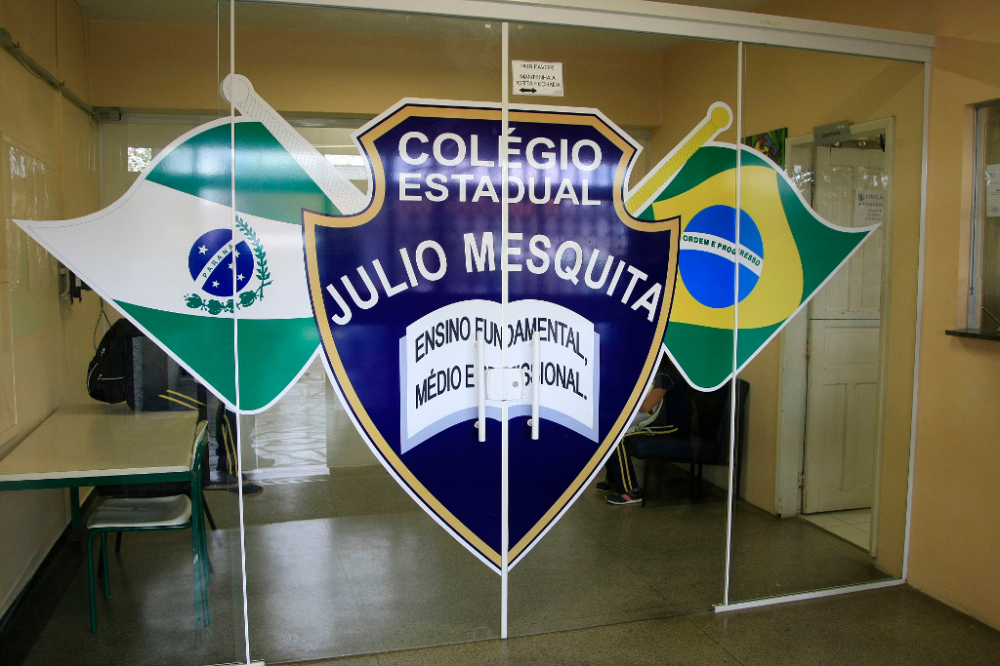
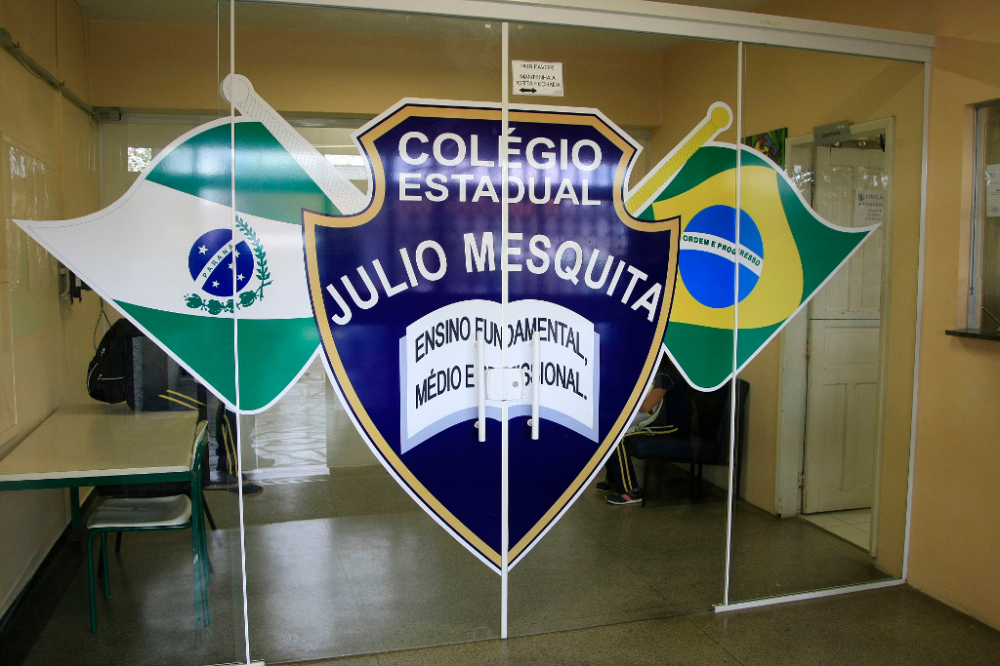

Educação de qualidade para o futuro de nossos alunos.
Conheça nossa históriaO Colégio Estadual Julio Mesquita, localizado no bairro Jardim das Américas em Curitiba, tem como missão oferecer ensino de qualidade, incentivando o aprendizado, o respeito e a cidadania. Há décadas formando estudantes preparados para o futuro, o colégio se destaca pela dedicação de seus professores e pela participação ativa da comunidade escolar.
Fundação do colégio e início do Ensino Fundamental.
Ampliação para o Ensino Médio.
Implantação do EJA e novos projetos pedagógicos.
Rua Maria Theodora de Paula Costa, 49 - Jardim das Américas, Curitiba - PR, 81530-270
 


Diretor Principal

Vice Diretora

Português

Matemática

Ed. Financeira